Manipulation des objets¶
Le document original et l’aide pédagogique sont séparés pour rendre leur provenance explicite.
SOURCE DRIVE · DOCUMENT ORIGINAL
Les pages ci-dessous reproduisent les documents du dossier TSSR, dans leur ordre original, avec leurs schémas, captures et exemples. Les liens donnent aussi accès au fichier complet. Les versions et les consignes sont celles du support de formation.
Support · Module 03 - Support de cours.pdf · 15 pages
Ouvrir le document intégral Source dans le Drive
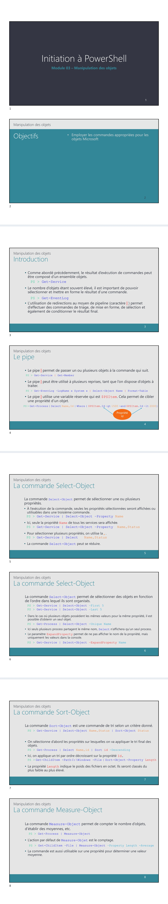
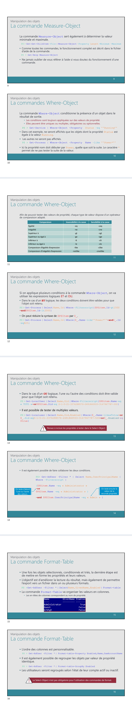
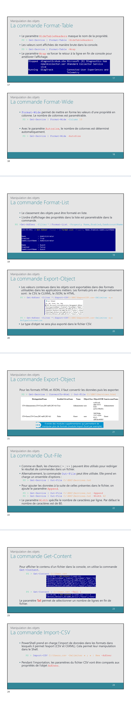
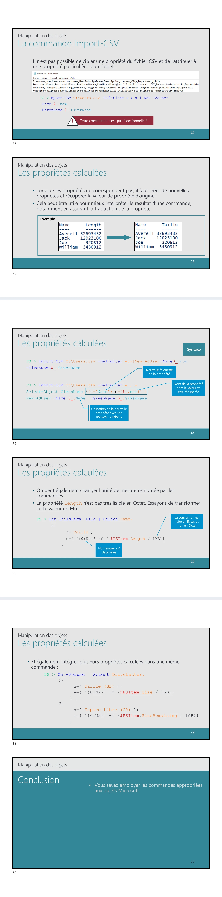
Référence du document : 1QFC1_tXd6PhXvwUg0gisgE7SABd8fBf1 · SHA-256 05fe89244edfff8f…
Démonstration · Fiche d‚mo 1 - Le pipeline.pdf · 2 pages
Ouvrir le document intégral Source dans le Drive
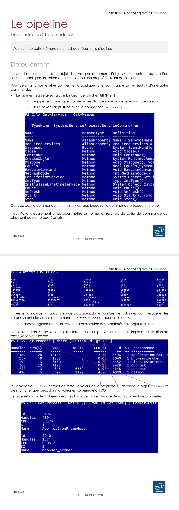
Référence du document : 1hPZ8GBo1zPcMJPAwhx8y8uEkdmXrR3Am · SHA-256 1430d01933d23f6d…
Démonstration · Fiche d‚mo 10 - ConvertTo.pdf · 2 pages
Ouvrir le document intégral Source dans le Drive
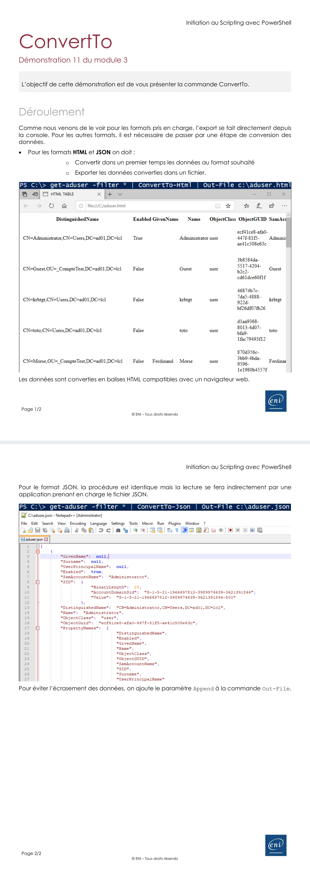
Référence du document : 1wE9qF_IeceXC9qtml-dDiFcqX8I3QToG · SHA-256 a15e93e3b6bee417…
Démonstration · Fiche d‚mo 11 - Get-Content.pdf · 1 pages
Ouvrir le document intégral Source dans le Drive
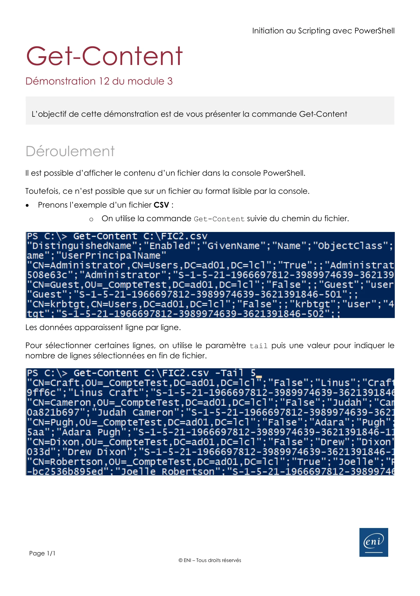
Référence du document : 123mTRkoU8p08hLgEFA7PpadhfsFFKVSN · SHA-256 b834dad0e1d8c38c…
Démonstration · Fiche d‚mo 12 - Import des objets.pdf · 2 pages
Ouvrir le document intégral Source dans le Drive
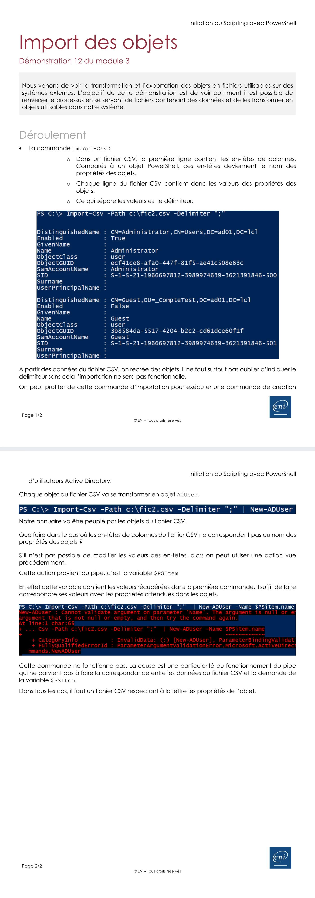
Référence du document : 1HKcnE-tbSeypD8UeCEoGoIsknm6pM8k8 · SHA-256 69cc31a1a2fca91c…
Démonstration · Fiche d‚mo 13 - Les propri‚t‚s calcul‚es.pdf · 2 pages
Ouvrir le document intégral Source dans le Drive
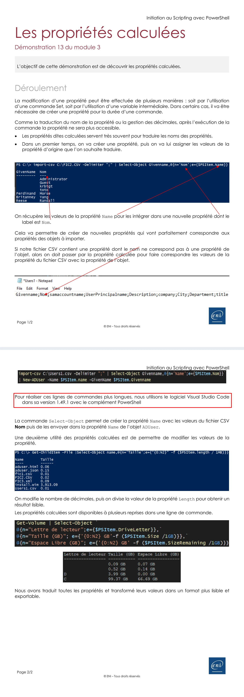
Référence du document : 1-dGKNfkxuPAohf4cUVqwe0jRnWDFfMsM · SHA-256 531d46bbcfcfb759…
Démonstration · Fiche d‚mo 2 - Select-Object.pdf · 3 pages
Ouvrir le document intégral Source dans le Drive
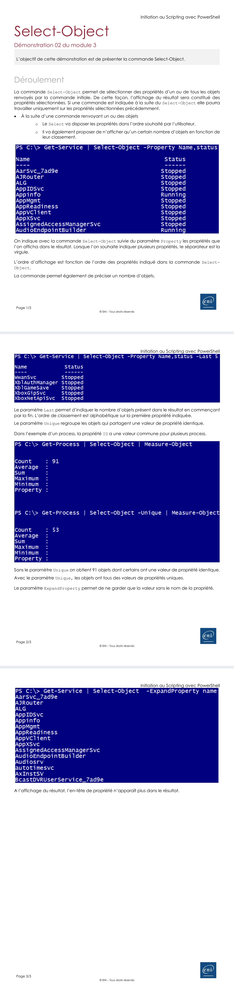
Référence du document : 17PeQA7NPkv5tN6N6ilTPSlmlbMlts7Ga · SHA-256 88661c6ea7711b5b…
Démonstration · Fiche d‚mo 3 - Measure-Object.pdf · 2 pages
Ouvrir le document intégral Source dans le Drive
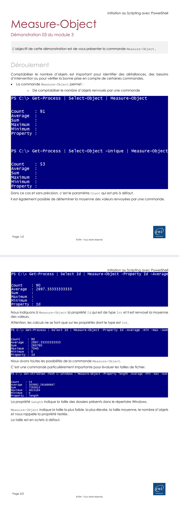
Référence du document : 1tiw_26jEXuOwOrFcerBrLa1u82jAoldx · SHA-256 658af100882af469…
Démonstration · Fiche d‚mo 4 - Sort-Object.pdf · 2 pages
Ouvrir le document intégral Source dans le Drive
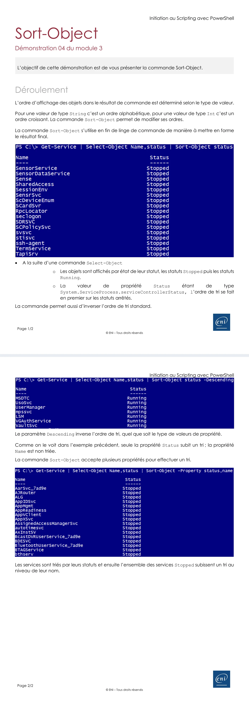
Référence du document : 1J0sVqx5QD-73uZSlj2eOKbtKcbx3K02o · SHA-256 2fa6bdd22bb4647d…
Démonstration · Fiche d‚mo 5 - Where-Object.pdf · 4 pages
Ouvrir le document intégral Source dans le Drive
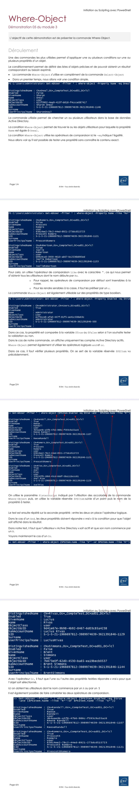
Référence du document : 1L51B4JI2gf8z_fvz0zHlUqbJmGnlHOkQ · SHA-256 95b4aeb84563e269…
Démonstration · Fiche d‚mo 6 - Format-Table.pdf · 3 pages
Ouvrir le document intégral Source dans le Drive
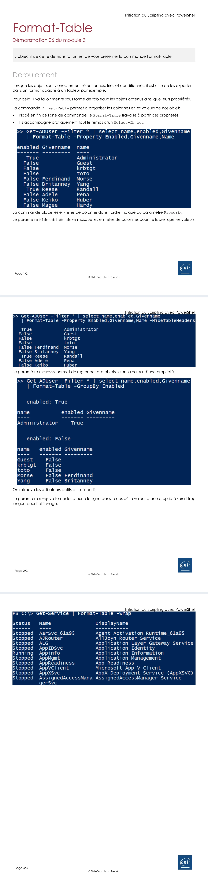
Référence du document : 1RZTyNl8v0lgrVPdenc9H6fYOSFEOGrtL · SHA-256 e753036abe86b7c8…
Démonstration · Fiche d‚mo 8 - Format-List.pdf · 2 pages
Ouvrir le document intégral Source dans le Drive
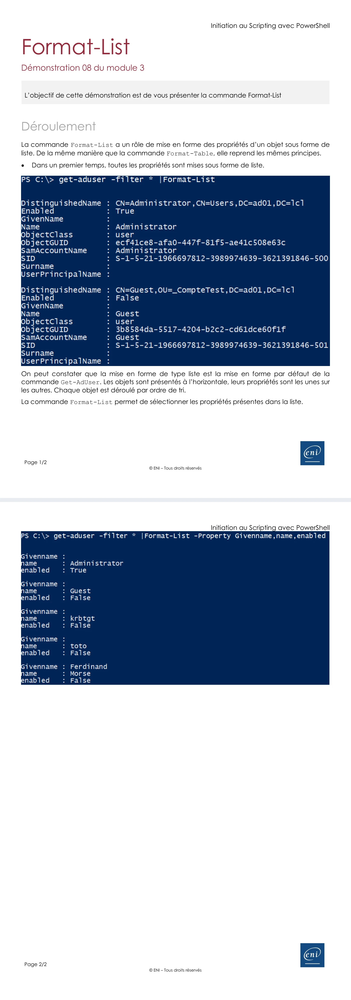
Référence du document : 1seN7AcUmhXSPdYkI4pyvdgfKAUr__9BU · SHA-256 01643372ae792724…
Démonstration · Fiche d‚mo 9 - Export-Object.pdf · 3 pages
Ouvrir le document intégral Source dans le Drive
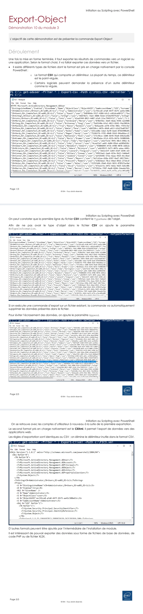
Référence du document : 10nnSDbh474FxYYmhhOzJyzOW1eQz-tJm · SHA-256 24441a6b66fd2cf7…
Démonstration · Fich‚ d‚mo 7 - Format-Wide.pdf · 2 pages
Ouvrir le document intégral Source dans le Drive
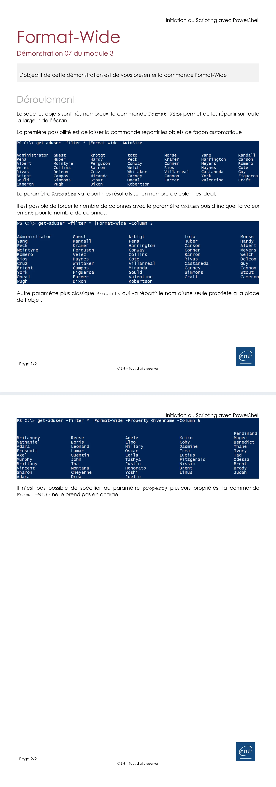
Référence du document : 1hQEtBdFpF1oVt3rPMdBVHEW3kR2VqhIA · SHA-256 8e4ab4aa3f7b9d45…
Énoncé · nonc du TP - Manipuler des objets.pdf · 6 pages
Ouvrir le document intégral Source dans le Drive
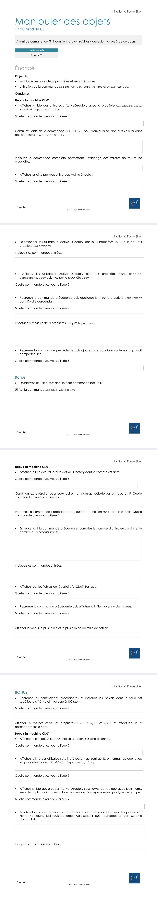
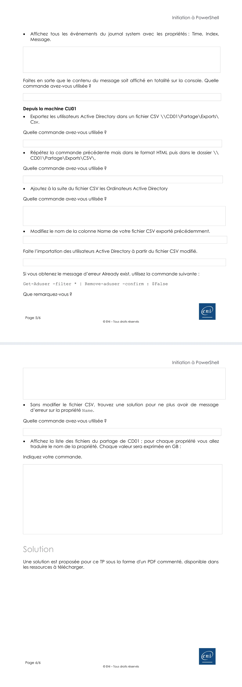
Référence du document : 1WvzWMpdknTaN7Uw07NG9460kw-qGdQBZ · SHA-256 b233ed14007424a6…
Correction · Solution du TP - Manipuler des objets.pdf · 5 pages
Ouvrir le document intégral Source dans le Drive
Correction originale : à consulter après avoir tenté l’exercice.
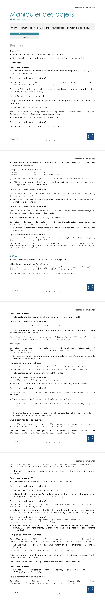
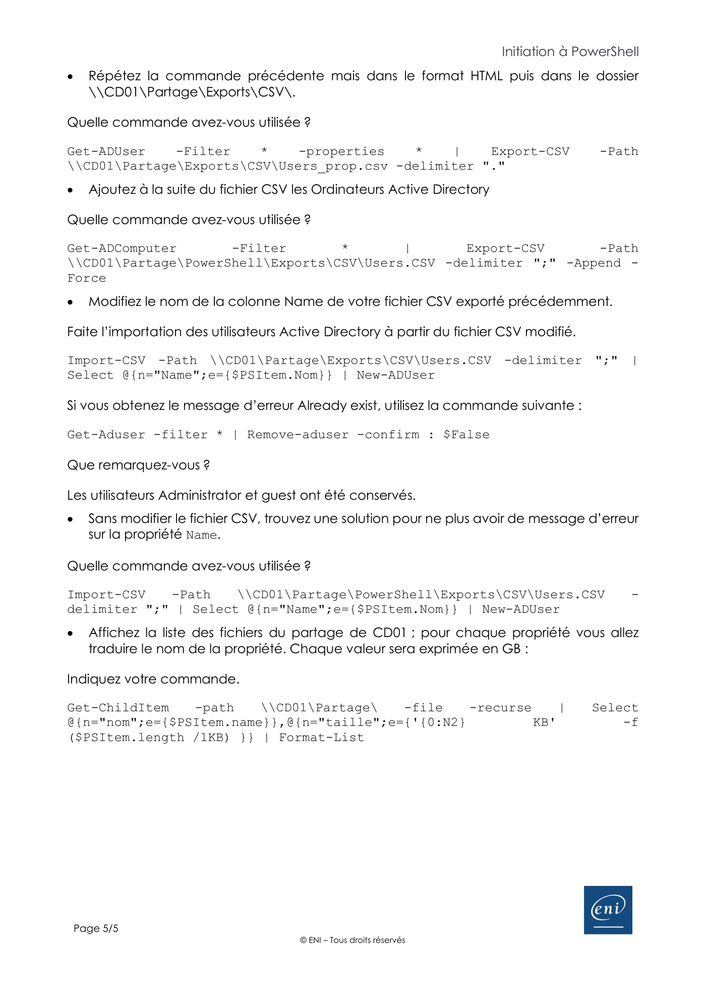
Référence du document : 1AWWRP3sm9JLep9ATxwpu3ZEuO91tymga · SHA-256 36507f9b95b90749…
Complément IA / externe au cours — fiche pédagogique du portail
Cette fiche contient une reformulation et des aides d’apprentissage rédigées par IA. Elle est distincte des documents originaux du Drive et ne les remplace pas. Les schémas de synthèse de cette fiche sont des illustrations IA / externes au cours, sauf les captures explicitement attribuées à un document source.
Objectifs¶
À l’issue du module, vous devez pouvoir enchaîner des commandes PowerShell pour sélectionner, filtrer, trier, mesurer, mettre en forme et produire une représentation des objets retournés par une commande.
Faire circuler des objets dans un pipeline¶
Le caractère | transmet un ou plusieurs objets à la commande suivante. Un pipeline peut contenir plusieurs commandes tant que les objets produits sont utilisables par la suite de la chaîne.
Dans les expressions qui examinent l’objet courant, les sources utilisent $PSItem et sa forme raccourcie $_.
Sélectionner et mesurer¶
Select-Object permet de choisir des propriétés ou une partie des objets :
-Property-First-Last-Unique-ExpandProperty
Measure-Object fournit un comptage par défaut. Avec -Property, les sources montrent aussi -Average, -Minimum, -Maximum et -Sum pour des propriétés numériques.
Trier et filtrer¶
Sort-Object trie sur une propriété ; les sources emploient aussi -Descending et le tri sur plusieurs propriétés.
Where-Object conserve les objets qui répondent à une condition. Les formes présentées sont -Property, -FilterScript, $PSItem et $_.
Les opérateurs attestés sont :
-eq,-ceq,-ne,-cne-gt,-cgt,-ge,-cge,-lt,-clt,-le,-cle-like,-clike,-notlike,-cnotlike,-match-and,-or
Les formes courtes rencontrées dans les documents sont Select, sort, where et measure.
Mettre en forme le résultat final¶
Le formatage intervient en fin de chaîne, après les opérations de sélection, de tri ou de filtrage.
Format-Table:-Property,-HideTableHeaders,-GroupBy,-Wrap;Format-Wide:-AutoSize,-Column,-Property;Format-List:-Property.
Les formes courtes fl et fw apparaissent également dans les sources.
Exporter, convertir et relire¶
Les documents présentent Export-Csv avec -Path, -Delimiter, -NoTypeInformation et -Append. Ils citent aussi CliXML au niveau de l’export d’objets.
Pour produire une représentation, les exemples utilisent ConvertTo-Html, ConvertTo-Json et Out-File, y compris -Append et -Width. Get-Content avec -Tail sert à consulter la fin d’un fichier et Import-Csv avec -Delimiter à importer des données CSV.
Propriétés calculées¶
Une propriété calculée est présentée sous la forme suivante :
Dans les cas montrés, cette structure sert à renommer ou traduire une propriété, adapter une colonne CSV, transformer une valeur, modifier une précision, convertir une taille ou combiner plusieurs propriétés calculées.
Mise en pratique et vérification¶
Le TP unique « Manipuler des objets » (1 h 30) mobilise sélection, aide, utilisateurs, filtres, tris, comptes actifs ou inactifs, comptage, fichiers, tailles, formats, événements, export, import et propriétés calculées. Les prérequis vidéo et l’environnement de laboratoire cités par les sources ne sont pas fournis avec ce module.
Une commande de suppression d’utilisateur est présente dans le scénario source. Elle relève exclusivement du laboratoire : elle ne doit pas être exécutée hors de ce contexte et l’identité de laboratoire n’est pas reproduite ici.
Synthèse¶
La progression source consiste à faire circuler des objets, sélectionner ou filtrer ce qui est utile, mesurer ou trier si nécessaire, puis formater ou exporter le résultat.
Le TP et la fiche de révision sont proposés séparément dans l’écosystème du module.
Complément IA / externe au cours — Garder les objets jusqu’au résultat¶
Illustration IA / externe au cours.
Le dessin IA reprend les opérations présentées dans ce module. L’affichage et l’export sont deux issues de travail : conserver les objets avant de choisir la sortie ; ne pas insérer Format-Table avant Export-Csv.
Manipulation des objets
10 questions
Teste tes connaissances sur ce module.